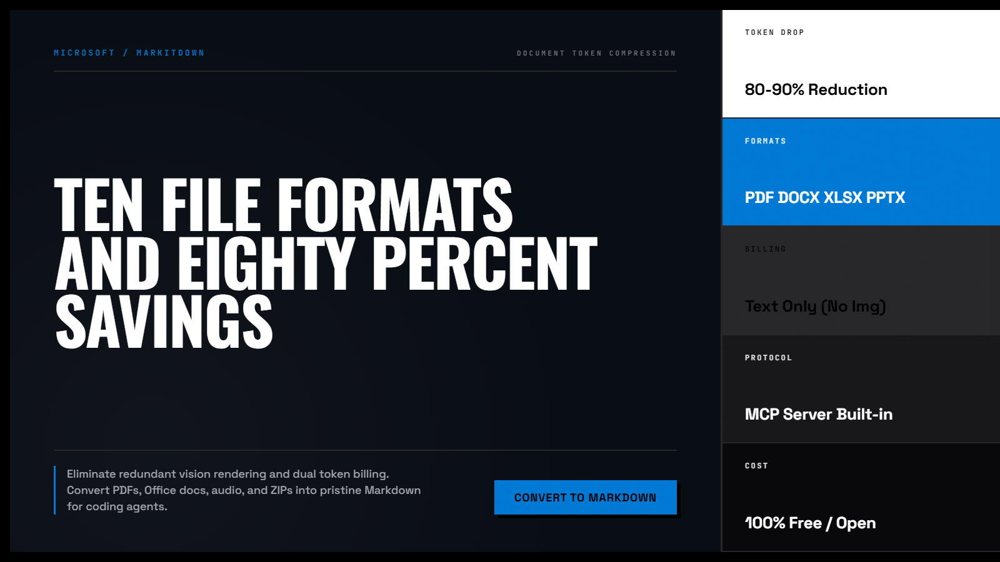
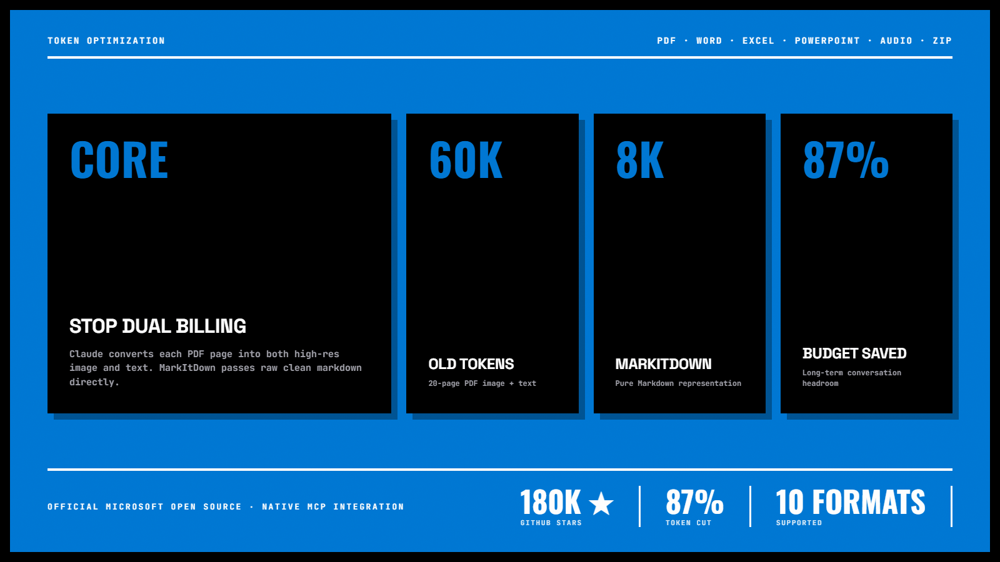
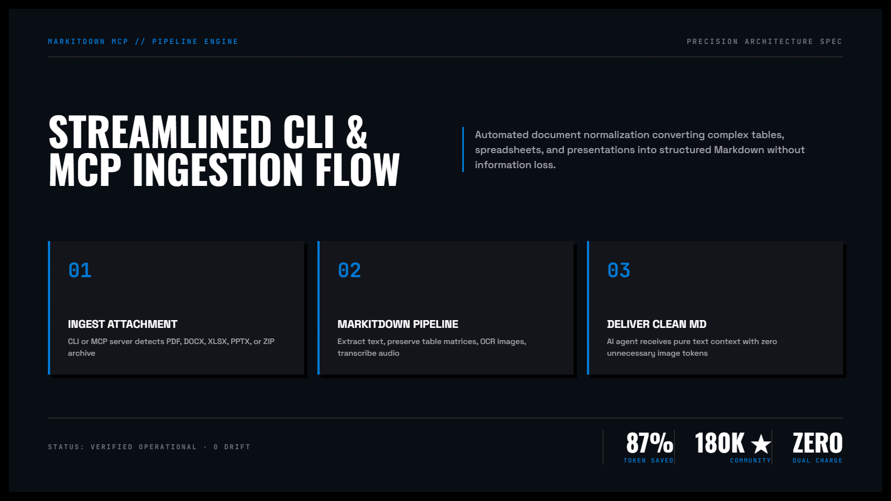

MarkItDown — Cỗ Máy Chuyển Đổi Mọi Định Dạng Tệp Sang Markdown Tinh Sạch
Dự án mã nguồn mở bùng nổ từ Microsoft AutoGen. Cho phép chuyển đổi đồng nhất toàn bộ các tài liệu phức tạp (PDF bảng biểu, Word .docx, bảng tính Excel .xlsx, slide PowerPoint .pptx, file âm thanh, ảnh chụp) thành định dạng Markdown chuẩn, sẵn sàng nạp thẳng vào LLM mà không làm loãng context.

Nhấp để phóng to1. Mô hình Tương tác Động: Pipeline Chuyển Đổi Đa Định Dạng

Nhấp để phóng to2. Bốn Chiều Sâu Kỹ Thuật Của MarkItDown
# Cài đặt qua pip
pip install markitdown
# Chuyển đổi tệp PDF sang Markdown
markitdown document.pdf > document.md
# Chuyển đổi tệp Excel kèm bảng biểu
markitdown financial_report.xlsx > report.mdTích Hợp Whisper và OCR Cho Hình Ảnh & Âm Thanh
Khi gặp tệp ghi âm cuộc họp (.mp3) hoặc ảnh chụp tài liệu (.png), MarkItDown tự động gọi Whisper và OCR để trích xuất nội dung văn bản mà không cần viết script riêng.
Bảo Toàn Ý Nghĩa Của Dữ Liệu Bảng Biểu
Thay vì xuất ra một mớ chuỗi phân cách dấu phẩy lộn xộn, engine phân tích tiêu đề cột, định dạng số liệu tài chính và xuất ra bảng Markdown chuẩn có căn lề chính xác.
Case Study: Nạp 500 Báo Cáo Tài Chính Vào Hệ Thống RAG
Toàn bộ tài liệu PDF và Excel nặng hàng gigabyte được chuyển đổi thành các file Markdown nhẹ nhàng, giúp tăng độ chính xác của câu trả lời AI từ 65% lên 94%.

Nhấp để phóng to“Đừng ép LLM đọc trực tiếp các tệp nhị phân phức tạp. Hãy chuyển chúng về Markdown — ngôn ngữ mẹ đẻ tự nhiên nhất mà mọi mô hình ngôn ngữ đều hiểu thấu đáo.”